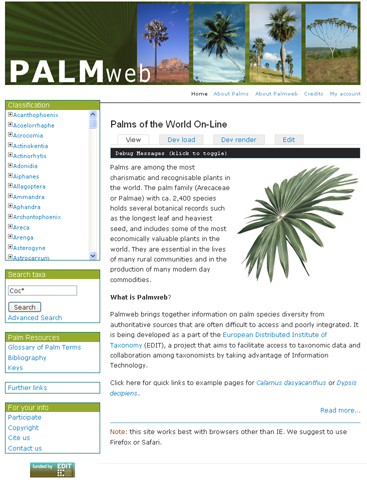
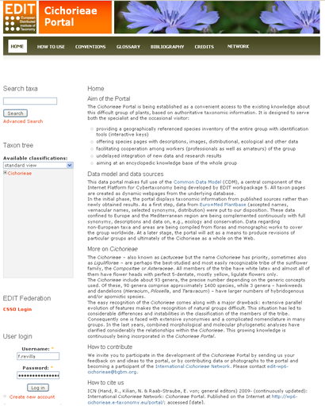
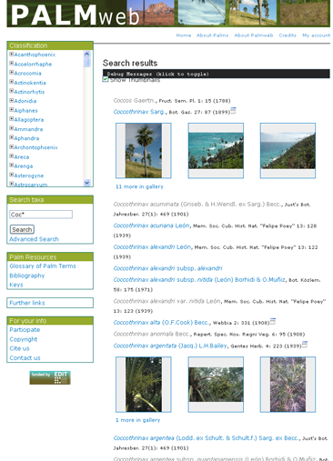
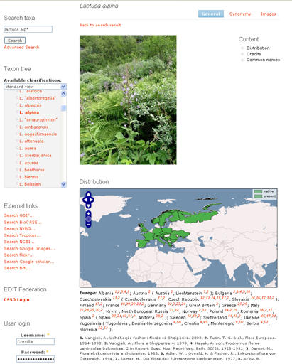
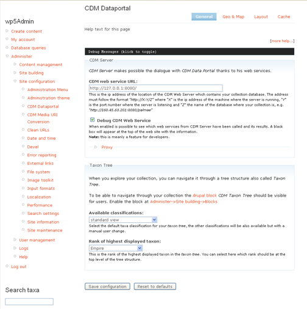

Examples
It is possible to see the data portal in action, the following links contains some collections using it.
- Cichorieae group of plants.
- Palmae group of plants.
- Diptera group of flies and mosquitoes.
Screenshots
The welcome site of the palmweb with the taxon tree (the classification box) and the search (the search box) at the link side of the page. On the middle of the page is the welcome text.
The welcome site of the cichorieae with the taxon tree (the classification box), the search (the search box) and the user login at the link side of the page. On the middle of the page is the welcome text.
A screenshot of the palmweb portal after performing a search for the string "Coc"
Screenshot of the Lactuca Alpina from cichorieae portal. We can see how a taxon profil (general tab) page looks like with his profile picture and distribution map. We can see the footnotes for the distribution references (the small red numbers). Also the taxon tree is focused at the Lactuca Alpina taxon under Cichorieae->Lactucinae->Lactuca->L. alpina at the left side of the page.
Screenshot of the Crepis Mollis taxon from cichorieae portal. This is how the synonymy tab looks like. The heterotypic synonyms are grouped and ordered by date. The footnotes are displayed at the end of the page and the red links

The following screenshot is from one of the configuration pages of the data portal, it contains the instructions for a correct configuration. At the top right corner are the different configurable options (general, geo & map, layout and cache).
